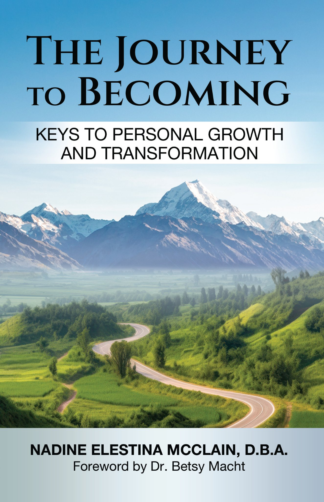

About Dr. Nadine Elestina McClain

Hello, I'm Dr. Nadine Elestina McClain
Welcome to my corner of the digital world. I'm a transformational author, pastor, and CEO committed to helping you unlock the next chapter of your life with purpose and power. Whether you're navigating change, seeking clarity, or ready for change, I'm here to walk that journey with you.
Bahamas-based | Pastor & Author | Biblical Foundation for Personal Transformation
My Story
"Success taught me everything except how to truly live…"
I wrote this book while healing from grief, completing my doctorate, living during the COVID-19 pandemic, and walking out my faith with fresh fire.
This journey through loss, growth, spiritual awakening, and pastoral calling led me to write The Journey to Becoming: Keys to Personal Growth and Transformation — a biblically-grounded guidebook born from years of real-world experience.
This isn't just theory on pages, it's a roadmap forged through my own journey of becoming.
Today, I help others begin their own transformational journey through my writing, pastoral ministry, speaking, and meaningful conversations rooted in biblical truth.
This isn't just my story, it's an invitation to write your next chapter.
About The Journey to Becoming

The Journey to Becoming: Keys to Personal Growth and Transformation is more than a book; it's your companion for the most important journey you’ll ever take. Through eleven transformative chapters, you'll discover biblical foundations for lasting change, from mastering self-discipline and mindset transformation to navigating God's silence and unleashing the power of forgiveness.
This book meets you where you are and guides you where God is calling you to go — whether you're an executive seeking purpose beyond profit, a believer hungry for deeper growth, or someone standing at a crossroads of change.
The Journey to Becoming Will Help You Explore:
- The painful silence of God — and how to navigate it.
- Forgiving others (and yourself) without losing your mind.
- Why mindset transformation isn’t optional — it’s spiritual.
- Setting healthy boundaries that heal, not hurt.
- How prayer shifts not just situations — but your soul.
- The power of self-discipline when motivation fails you.
- What forgiveness really heals — and what it doesn't.
- Why trust is a weapon when everything feels uncertain.